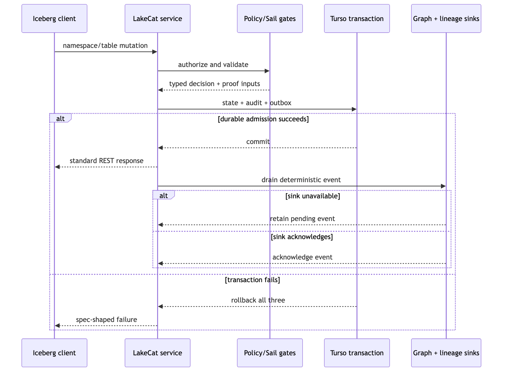

Figure 2. A catalog mutation admits state, audit, and outbox atomically; external projections are acknowledged after replay.
For each governed mutation, LakeCat first authenticates and validates the request. It evaluates policy and reusable Iceberg semantics before entering the durable store transaction. The transaction writes three logically coupled records: catalog state, a value-redacted audit record, and an outbox event. If any write fails, all three roll back. Only then can a standard REST success response be returned.
The outbox drain validates the outer event envelope, inner event type, content-bound identifier, and sensitive location evidence before projection. An unavailable sink leaves the event pending. Recovery replays identical input; acknowledgement removes the backlog only after the sink accepts it. This is an at-least-once contract. LakeCat does not claim distributed exactly once, and sinks must tolerate deterministic duplicate delivery.
This design addresses a common ambiguous-outcome problem. A disconnected HTTP client cannot infer whether an operation committed. Idempotency and exact retry can reconcile requests within the advertised profile; durable audit/outbox state lets operators and downstream systems reconstruct what the catalog admitted. The benchmark distinguishes a request lost before upstream object storage from an upstream success whose response was lost, service restart from cold state restore, and catalog durability from object-store durability.